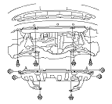
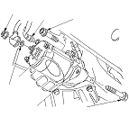
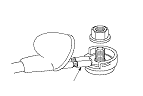

Starter Replacement
Disconnect the battery negative cable, then disconnect the positive cable.
Remove the splash shield.

Disconnect the starter cable (A) from the B terminal on the solenoid, then disconnect the BLK/WHT wire (B) from the S terminal.
Remove the two bolts holding the starter, then remove the starter.

Install the starter in the reverse order of removal. Make sure the crimped side of the ring terminal (A) is facing out.
Connect the battery positive cable and negative cable to the battery.
